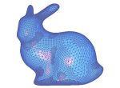
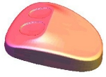
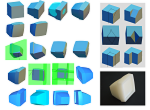

Geometric Modeling
Introduction to My Research Papers
This page introduces research related to geometric modeling, subdivision-surface modeling technologies, digital modeling before the widespread use of 3D printers, and contributions to related research fields. Two doctoral degrees were completed through research in this area.
Subdivision Surfaces
Subdivision Surfacesによるモデリング手法

Subdivision surfaces had already been proposed in the 1970s, but they did not receive broad attention in content production or industrial design until the 1990s. Modeling for visual content production became increasingly important in the 1990s, while full-scale research on modeling for industrial product design expanded in the 2000s.
Our proposed methods were highly evaluated by researchers in the field of industrial design. The purpose of this research was to develop methods based on the fundamental theory of subdivision surfaces, especially for operations important in industrial applications, such as fillet processing and data reduction. These methods improved the quality of shape generation and also enhanced interactivity through data reduction. They also proposed an important idea related to level of detail in computer graphics.
(1) Fillet Operation
- Zheng XU, Kunio KONDO, A Fillet Operation with Recursive Subdivision Surfaces, Sixth IFIP WG 52 International Workshop on Geometric Modeling -Fundamentals and Applications(GEO6), pp.244-252,1998
- Zheng XU, Kunio KONDO, Fillet Operation with Recursive Subdivision Surfaces, Geometric Modelling, Theoretical and Computational Basis towards Advanced CAD Applications, IFIP —The International Federation for Information Processing Volume 75, pp 269-284 ,2001
- Zheng XU, Takahiru MIURA, Kunio KONDO, A Fillet Operation with Recursive Subdivision Surfaces, Visual Computing Workshop '98 in Toba, 画像電子学会, ビジュアルコンピューティングワークショップ‘98鳥羽,1998
(2) Specification of Polyhedral Networks
- Zheng Xu, Kunio KONDO, Introducing Feature Values for Effective Specification of Polyhedral Networks, 情報処理学会, 情報処理学会論文誌, Vol.41, No.3,pp.742-749,1999
(3) Adaptive Refinements
- Zheng Xu, Kunio KONDO, Adaptive Refinements with Subdivision Surfaces, EUROGRAPHICS'99 Short Papers and Demos, pp.239-242,1999
- Zheng Xu, KONDO K, Local Subdivision Process with Doo-Sabin Subdivision Surfaces, IEEE, Proceedings of International Conference on Shape Modeling and Applications, pp.7-12,2002.5
- 三浦 貴宏, 徐 崢, 近藤 邦雄, 細分割曲面のメッシュ数削減のための分割制御手法,日本図学会, 図学研究,Vol.33, No.2,pp.63-70,1999
Doctoral Dissertation
Zheng Xu，Generating Polyhedra and Adaptive Process for Subdivision Surfaces （細分割曲面のためのポリゴン生成と適応処理）, 1999
Fillet Operation of Subdivision Surfaces

This research further developed fillet operations for subdivision surfaces, including methods using Loop subdivision surfaces and approximation schemes based on cutting and raising the corners of control polygons. Liu developed this field together with sketch modeling and completed a doctoral dissertation based on these studies.
(1) Fillet Operations with Loop Subdivision Surfaces
- Wei-zhong LIU, Kunio KONDO, Fillet Operations with Loop Subdivision Surfaces, Proceedings of VRAI2002,2002.4
- Weizhong Liu, Kunio Kondo, Adaptive algorithm of automatic implementing fillet operations with loop subdivision surfaces, Proc. SPIE, Vol.4756, Third International Conference on Virtual Reality and Its Application in Industry, pp.87-97,2003.3
- Wei-zhong LIU, Kunio KONDO, Fillet Operation with Loop Subdivision Surfaces,情報処理学会,第64回（平成14年前期）全国大会講演論文集第4分冊, pp.753-754,2002.3
(2) Approximating Subdivision Scheme
- Weizhong Liu, Kunio Kondo, Limei Zhang, An Approximating Subdivision Scheme by Cutting and Upheaving the Corner of Control Polygon, International Society for Geometry and Graphics, The 11th International Conference on Graphics and Geometry,pp.134-138,2004.8
Doctoral Dissertation
Weizhong Liu，A 3D sketch interpreter system using template library and subdivision methods for geometric modeling （形状モデリングのためのテンプレートライブラリと細分割手法を用いたスケッチインタプリターシステムの構築）, 2005
Shape Representation for Time-Varying Volumes
This research proposed a method for representing shapes using four-dimensional implicit functions from time-series continuous tomographic images. A major feature of this approach is that it can represent moving three-dimensional shapes based on tomographic images of shapes that change over time.
- Hiroshi Watabe, Yutaka Ohtake, Takashi Kanai , Takashi Michikawa, Kunio Kondo, Shape representation for time-varying volumes using 4D implicit functions , IIEEJ Image Electronics and Visual Computing Workshop 2B-4,2007
- 渡部 広志, 大竹 豊, 金井 崇, 道川 隆士, 近藤 邦雄, 4次元陰関数を用いた時系列連続断層画像の形状表現, 画像電子学会,情報処理学会,Visual Computing /グラフィクスと CAD 合同シンポジウム 2007,2007.6
Digital Modeling Using 3D Printer

Around 2013, 3D printers attracted significant public attention. Before affordable and easy-to-use 3D printers became widely available, expensive devices had already been used in limited industrial fields under the name rapid prototyping, including stereolithography systems.
In Saitama Prefecture, a Digital Modeling Research Group had been established before 1998 to support regional industries. At the Industrial Technology Center, the use of 3D printers, then commonly referred to as stereolithography equipment, was promoted. The results of these activities were summarized as research papers.
Saitama Prefecture also held digital modeling contests to promote the creation of 3D models and the use of model output methods. This activity was later continued by the Japan Society for Graphic Science.
(1) 3次元立体の復元と複製
- 近藤邦雄,佐藤尚,町田芳明,増田伸二,星野 伸行,デジタルモデリングによる3次元立体の復元と複製,日本図学会, 図学研究,Vol.35,No.2, pp.7-11,2001.6
- KONDO Kunio, Song Genwang, Hisashi SATO, Yoshiaki Machida, Shinji Masuda, Nobuyuki Hoshino Digital Modeling in CAD Engineering Course at the Department of Computer Science Proceedings of the 5th Japan-China Joint Conference on Graphics Education, pp.116-121,2001.8
- 近藤邦雄,町田芳明,増田伸二,佐藤尚 ,デジタルモデリングによる3次元立体の復元と複製 ,日本図学会, 本部例会, 2000.11
(2) デジタルモデリングに関係する講演
- 近藤邦雄,デジタルモデリング入門(デジタルデザインハッドブック),埼玉県工業技術センター南部研究所,1999?2000?
- 近藤邦雄,デジタルモデリング入門,「IT時代とものづくり」講演会：ものづくりを考える会,埼玉県,2000.4.22
- 近藤邦雄,デジタルメディアを応用した設計手法に関する研究「デジタルモデリングのための3次元計測とラピッドプロトタイピング」,埼玉県工業技術センター外部招聘研究員講演会,2000.10
- 近藤邦雄,デジタルモデリングとデジタルアーカイブ , 埼玉県産業技術総合センター客員研究員講演会,2003.11.12
Digital Modeling Contest
- 鈴木賢次郎,近藤邦雄,小林一也,日本図学会第2回デジタルモデリングコンテスト入選, エッシャーの滝, 2008
- 近藤邦雄,黄檗雅也,大竹豊,金井崇,道川隆士,日本図学会第2回デジタルモデリングコンテスト入選, フリーハンドスケッチによる3次元形状モデリング, 2008
Back to Sketch Interpreter Next: Kansei Information Processing Back to Research Topics Back to Research